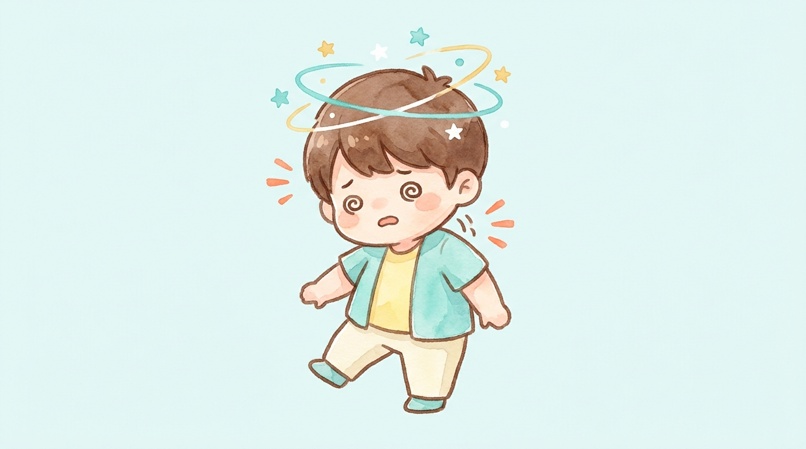

交通事故の症状別ケア
交通事故のあとから続くめまい・自律神経の不調
事故のあとから、めまい・ふらつき・耳鳴り・原因不明のだるさが続いていませんか？検査では異常が見つからないのに不調が続く——それはむちうちに伴う自律神経の乱れかもしれません。「気のせい」ではありません。首から整えるケアで、改善への道筋をご提案します。
自賠責で窓口0円
交通事故は夜20時まで受付
祝日も通常営業
事故のあとから、めまい・ふらつき・耳鳴り・原因不明のだるさが続いていませんか？検査では異常が見つからないのに不調が続く——それはむちうちに伴う自律神経の乱れかもしれません。「気のせい」ではありません。首から整えるケアで、改善への道筋をご提案します。
ひとつでも当てはまったら、我慢せずにご相談ください。

「病院？接骨院？何から始めれば…」の段階で大丈夫です。交通事故治療専門アドバイザーが、あなたの症状と状況でいま最初にやるべきことを無料でご案内します。検査が必要なら提携医療機関への紹介状を作成、保険や慰謝料でもめそうなら提携弁護士におつなぎ。窓口はぜんぶ小牧院ひとつで済みます。
首には、体のオン・オフを切り替える自律神経が密集して通っています。むちうちでこのエリアがダメージを受けると、体の「調整システム」そのものが乱れ、一見バラバラに見えるさまざまな不調が現れます。

むちうちの際に首の交感神経が刺激され続けると、めまい・耳鳴り・頭痛・吐き気・だるさなどが複合的に現れます。事故後の「なんとなく不調」の正体として知られる状態です。
首の筋肉が硬くこわばると、脳へ向かう血流が妨げられ、ふらつき・頭のぼんやり感・目の疲れにつながります。デスクワークで悪化しやすいのもこのタイプです。
首の筋肉や関節には体のバランスを感知するセンサーが多く存在します。むちうちでこのセンサーが誤作動すると、耳や脳に異常がなくてもめまい・ふらつきが起こることがあります。
事故のショックや保険のやり取りのストレス、痛みによる不眠は自律神経の乱れをさらに悪化させます。体のケアと同時に、安心して相談できる環境が回復には欠かせません。

手足に力が入らない、しびれや痛みがどんどん強くなる、意識のもうろうとした感じや強い息苦しさがある——そのような場合は病院・整形外科での検査が必要です。「どの病院に行けばいいか分からない」なら、先に小牧院へお電話ください。提携医療機関をご紹介し、紹介状を作成します。検査後の併用通院までまとめてご案内できるので、あちこち調べ回る必要はありません。
自律神経系の不調は、めまい・耳鳴り・頭痛・だるさ・不眠・気分の落ち込みなど症状が多彩で、しかも検査で異常が出にくいため、周囲の理解を得られにくい苦しさがあります。「怠けているだけでは」と自分を責めてしまう方も少なくありません。
しかし、事故後にこうした不調が始まったのなら、首のダメージという物理的な原因が隠れている可能性が十分にあります。原因にアプローチできれば、改善の道はあります。一人で抱え込まないでください。
国家資格を持つ柔道整復師が、回復の段階に合わせて4つのステップで進めます。

不調の出方・タイミング・事故前後の変化を時間をかけてお伺いし、首の状態（こわばり・可動域・圧痛）を検査。耳や脳の検査が必要と思われる場合は提携医療機関への紹介状を作成します。

まずは自律神経を刺激し続けている首のダメージを鎮めることから。ハイボルト・超音波で首の深部にやさしくアプローチし、過敏になった状態を落ち着かせます。

首・後頭部・肩甲骨まわりの筋肉を手技で丁寧にゆるめ、脳への血流と神経の働きを整えます。体の緊張がほどけると、睡眠の質から変わり始める方が多くいらっしゃいます。

仕上げは自律神経が整いやすい生活リズムづくり。呼吸法・睡眠環境・スマホとの付き合い方まで、再発しにくい体調管理を一緒に組み立てます。
「事故に遭ったばかりで何をすればいいか分からない」という段階でもOK。保険会社への連絡の仕方など、最初の手順からご案内します。
事故の状況・お体の状態・お仕事やご家庭のご事情まで、時間をかけて丁寧にお伺いします。
痛む場所だけでなく全身のバランスを検査し、その日から状態に合わせた施術を始めます。
回復までの見通しと通院ペースを分かりやすくご説明。無理なく続けられる計画を一緒に立てます。
交通事故治療専門アドバイザーが保険会社とのやり取りをサポート。必要に応じて提携弁護士のご紹介も可能です。
費用・保険・慰謝料のことまで、何でもお答えします。
交通事故ではよくあるパターンです。事故直後は体が興奮状態にあり痛みを感じにくく、2〜3日後からめまいが現れることが少なくありません。ただし受診が遅れるほど「事故によるケガ」だと証明しづらくなり、目安として事故から14日を超えると保険会社に認められにくくなると言われます。違和感の段階でも、まずは早めにご相談ください。
程度により個人差がありますが、軽めの場合で2〜4週間、症状が強い場合は3ヶ月以上かけてじっくりケアすることもあります。痛みが強い初期は週2〜3回、落ち着いてきたら週1回程度が一つの目安です。お仕事や家事のご都合に合わせ、無理のないペースをご提案します。
交通事故によるケガの施術は自賠責保険が適用されるため、被害者の方の窓口負担は原則0円です。費用の心配なく、必要なケアに専念していただけます。
当院独自の制度で、交通事故の施術を受けられた方へ通院状況に応じて最大2万円のお見舞金をお渡ししています。詳しい条件は来院時にご説明します。
はい、別のものです。慰謝料は保険会社から支払われる法的な賠償金で、通院日数などに応じて金額が決まります。お見舞金は当院が独自にお渡しするもので、慰謝料とは別に受け取れます。
通えます。医師の検査・経過観察を受けながら当院で施術を行う「併用通院」の方は多くいらっしゃいます。検査が必要な場合は提携医療機関への紹介状の作成にも対応しています。転院・併用の手続きもサポートしますのでご安心ください。
通院先を選ぶのは患者さんご自身の自由であり、保険会社が一方的に制限することはできません。対応にお困りの場合は当院の交通事故治療専門アドバイザーがサポートし、必要に応じて交通事故に強い提携弁護士もご紹介できます。一人で抱え込まずご相談ください。
休業損害として補償される場合があります。自賠責基準では原則1日あたり6,100円（収入により上限19,000円）が目安です。必要書類の準備などもご案内しますので、お気軽にお尋ねください。
受けられるケースが多くあります。ご自身の任意保険（人身傷害補償など）が使える場合や、過失割合によって自賠責が適用される場合があります。保険の状況を確認しながらご案内しますので、まずはご相談ください。
予約優先制です。LINEまたはお電話（0568-90-1841）でのご予約がスムーズです。交通事故によるケガの方は夜20時まで受付、祝日・連休も通常営業しています。
検査で異常がないのに不調が続く場合、原因が首の筋肉・神経の乱れにある可能性が高く、まさに当院のケアが力になれるケースです。実際に「検査で異常なし」と言われた方の改善例は多くあります。あきらめる前に一度ご相談ください。
ご無理のないペース・時間帯で計画を立てましょう。ご家族の送迎やめまいが軽い時間帯の予約など、通いやすい形を一緒に考えます。症状が強い日はLINEでご相談いただければ、予約変更も柔軟に対応します。
「病院？接骨院？何から始めれば…」の段階で大丈夫です。交通事故治療専門アドバイザーが、あなたの症状と状況でいま最初にやるべきことを無料でご案内します。検査が必要なら提携医療機関への紹介状を作成、保険や慰謝料でもめそうなら提携弁護士におつなぎ。窓口はぜんぶ小牧院ひとつで済みます。

めまいや自律神経の不調は、「見えない・伝わらない・検査に出ない」という三重の苦しさを抱えています。周囲に分かってもらえないまま我慢を続けると、心の疲れまで重なってしまいます。
BTG接骨院 小牧院は、そのつらさに正面から向き合います。首から整える専門的なケアと、保険や慰謝料の不安まで含めたサポートで、あなたの回復を支えます。自賠責で窓口0円・夜20時まで受付。まずは話を聞かせてください。
このページを閉じる前に、LINEで「めまい・自律神経の不調がつらい」と一言送ってみてください。アドバイザーから、あなた専用の「次にやること」が返ってきます。相談は無料、しつこい営業は一切ありません。
気になる症状をタップすると、詳しいページをご覧いただけます。

交通事故によるめまい・自律神経の不調のことなら、BTG接骨院 小牧院へ。
LINE・お電話で、無料相談を受け付けています。